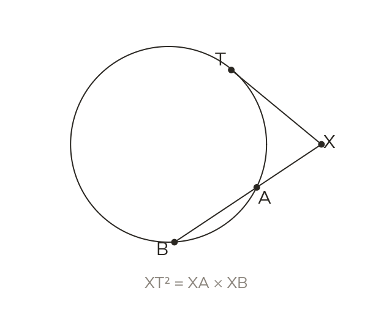
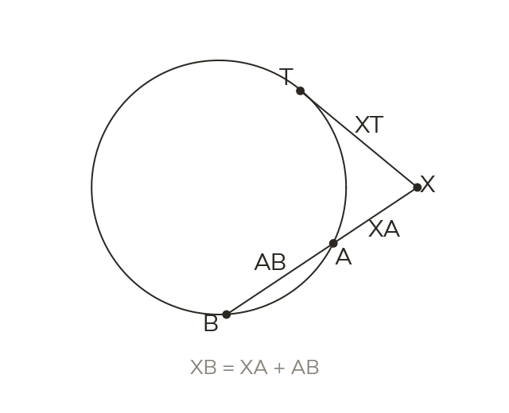
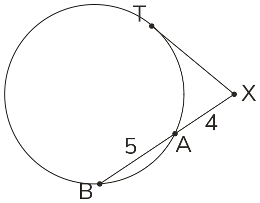
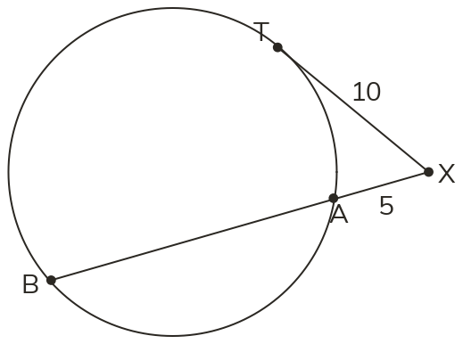
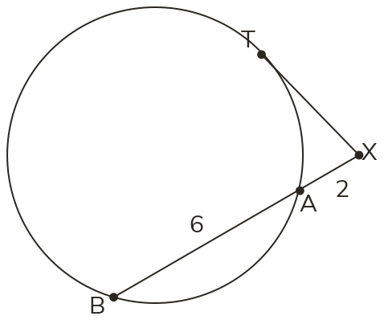
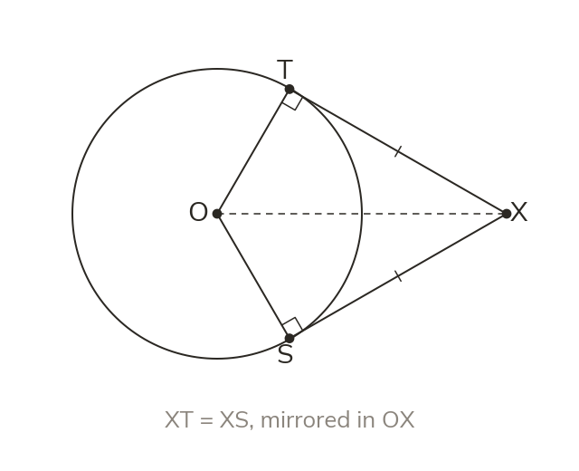
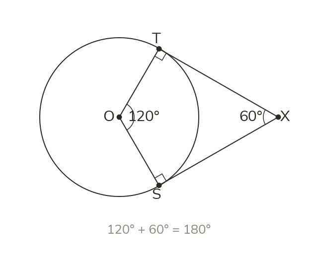
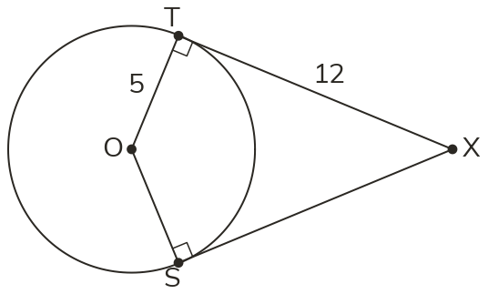
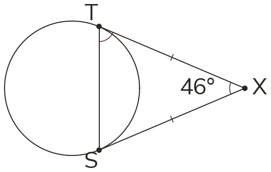
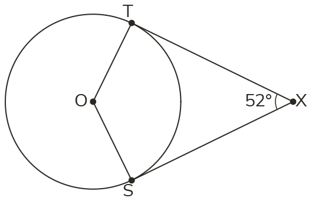

The tangent squared
A tangent from X is a line whose two crossing points meet at T. So XT × XT equals XA × XB.
From a ship's mast, the line of sight to the horizon is a tangent to the Earth. A tangent and a line through the circle give one more equal product.
Work down the page at your own pace. Write every answer in your book first, then click to check it.
Read each card, then follow the worked examples one step at a time.

A tangent from X is a line whose two crossing points meet at T. So XT × XT equals XA × XB.

The lengths XT, XA and XB all start at X. The far length XB includes the chord AB.


Pick an answer. If it's wrong, the feedback tells you which mistake it was.

Read each card, then follow the worked examples one step at a time.

The two tangents from a point outside a circle are equal in length. The line to the centre is a line of symmetry.

The radii meet the tangents at right angles. So the angles at O and X add to 180°.


Pick an answer. If it's wrong, the feedback tells you which mistake it was.

Finished? Next lesson: 10H.15.1 Completing the Square when 'a' Equals 1.
Log in, then search for a code to practise that skill.
Videos, worksheets and more on each part of this lesson.